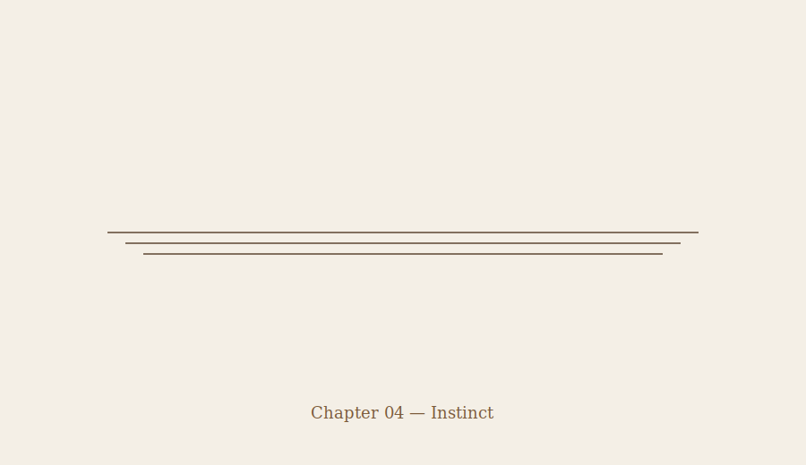

Chapter 04 — Instinct
My first instinct wasn’t fear.
It was you.
I was at the gym. Chalk on my hands. Music still playing. Someone asked me how many sets I had left. Everything looked normal.
I opened my phone and went straight to your name.
bubu / wifey
stay at your place. don’t go anywhere. i’ll come get you.
It didn’t send.
Weeks earlier, I’d said it as a joke.
“If anything ever happens,” I told you, “don’t move. Stay where you are. I’ll come get you.”
Standing there, it didn’t feel like a joke anymore.
It felt like a promise that had just come due.